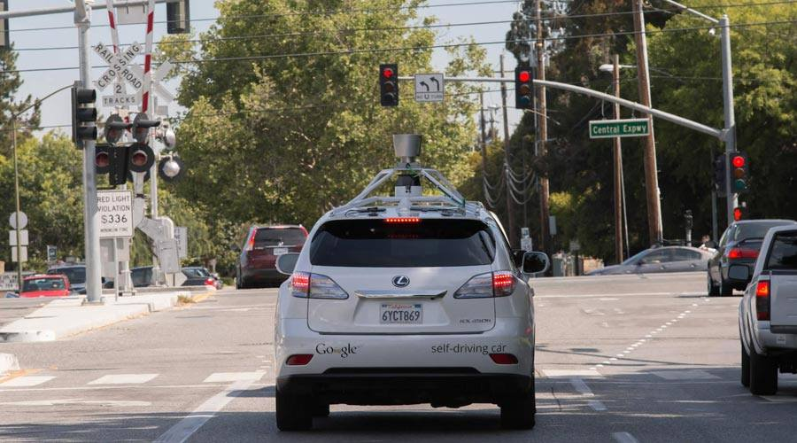
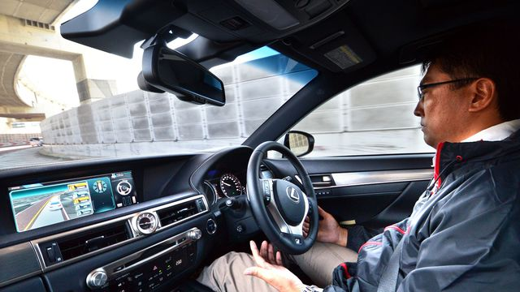

Revue De Presse
Sous ses airs de Batmobile de luxe, le prototype 103EX trace les grandes lignes de la voiture
du future imaginée
par la prestigieuse marque du groupe BMW. Plus d'infos
Aussi surprenant que cela puisse paraître, l'appellation « voiture autonome » n'avait aucune existence légale dans la langue française jusqu'à récemment. L'erreur a été réparée et d'autres termes étrangers liés à l'automobile ont bénéficié de leur équivalent en français. Plus d'infos
Tokyo - Le géant japonais Toyota conçoit à court terme les voitures comme des "anges gardiens" technologiques afin de
préserver des vies, avant le cap plus lointain de l'automobile autonome, selon la vision livrée à Tokyo par le PDG de sa société de R&D.
Plus d'infos
Le débat sur la voiture autonome est ouvert. Entre les constructeurs d’abord qui s’observent, s’allient et se craignent avec, notamment, de nouveaux acteurs venus d’autres horizons qui rêvent de bousculer l’ordre établi. Au sein des pays ensuite qui réfléchissent à un nouveau code de la route, à une définition inédite de la notion de responsabilité et à un réseau routier à refaire. Comment arrêter ce mouvement pour mieux en prendre le contrôle? La General Motors a peut-être trouvé : il suffit de ne pas perdre les pédales. Plus d'infos
 La voiture autonome intéresse l'entreprise de VTC Uber, qui dévoile sa première voiture capable de rouler sans
intervention humaine. Des tests vont débuter cette année à Pittsburg. Uber est un service de véhicule de transport avec chauffeur
qui aimerait bien se passer de chauffeurs : c'est la conclusion humoristique que l'on pourrait tirer de la nouvelle annonce de
l'entreprise. En effet, Uber vient de dévoiler une Ford Fusion bardée de capteurs et bien chargée sur son toit, et pour cause :
elle est dotée d'un système de pilotage autonome.
Plus d'infos